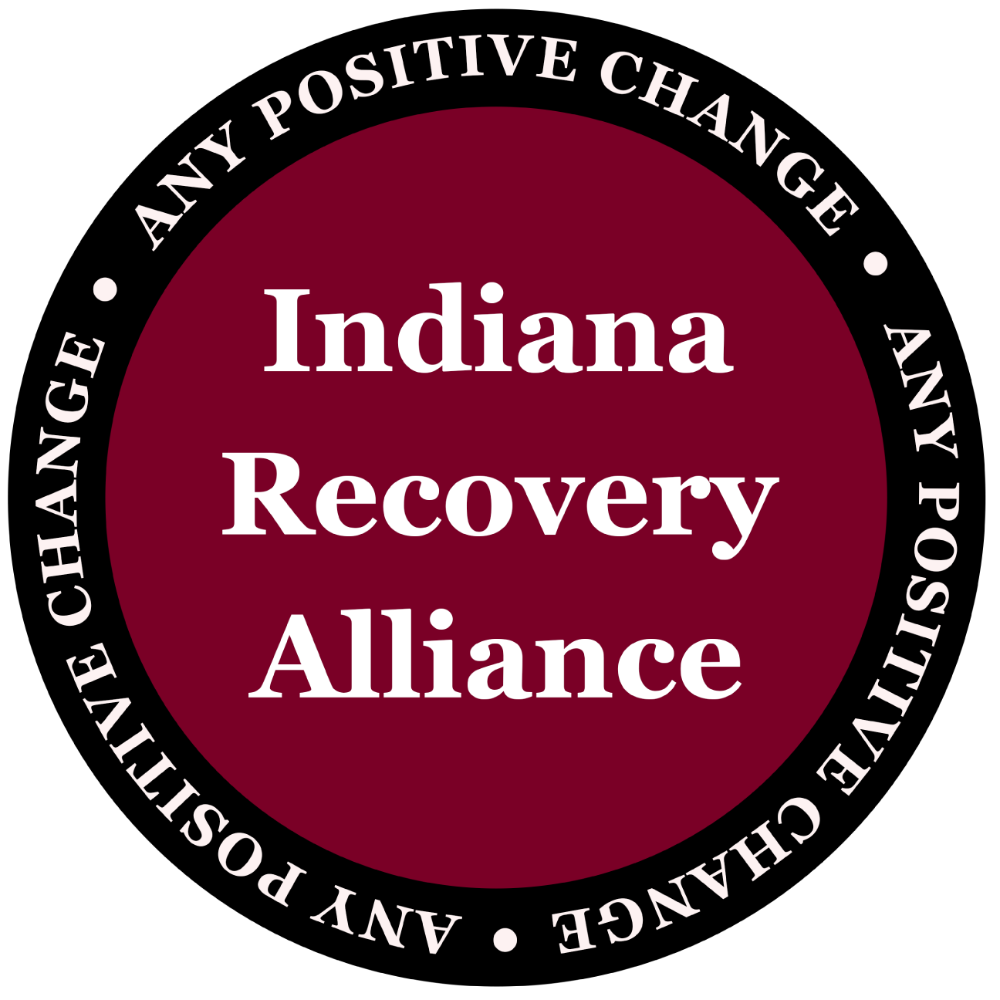
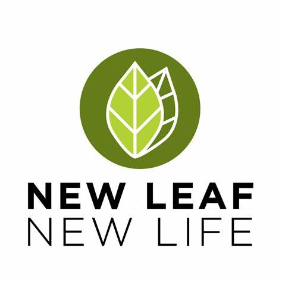
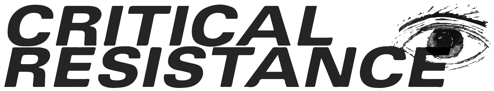
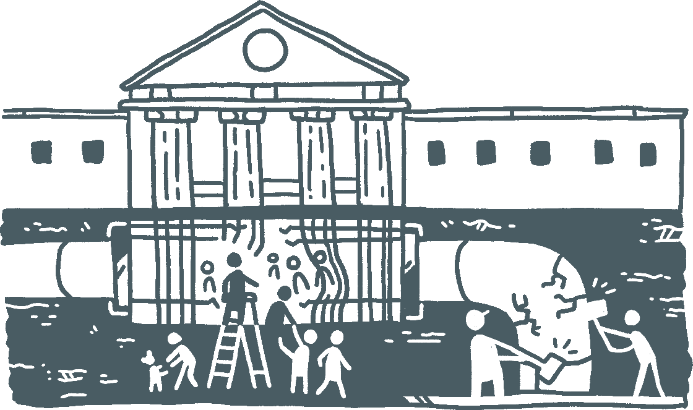

Other organizations
Below is a list of other organizations at home and beyond that we think are doing important work.
Local Organizations

Indiana Recovery Alliance
IRA is a Bloomington based human rights advocacy and harm reduction organization which works with folks to meet them where they are and provide the assistance they want.
Without biases or condemnation, IRA works to mitigate the harm and danger caused by overdose, disease, chaotic use, and incarceration.

New Leaf New Life
NLNL supports people both when they are incarcerated and once they've gotten out. Whether it's by helping those recently released obtain copies of important documents, put a deposit on a new apartment, find their first job on the outside, or so many more things, NLNL is a cornerstone of our community.
Organizations throughout Indiana
Organizations around the country


Beyond Criminal Courts
Contact
611 W 12 Street
Bloomington, Indiana 47404
Instagram: @carenotcages.moco
Email: carenotcages.monroecounty@gmail.com